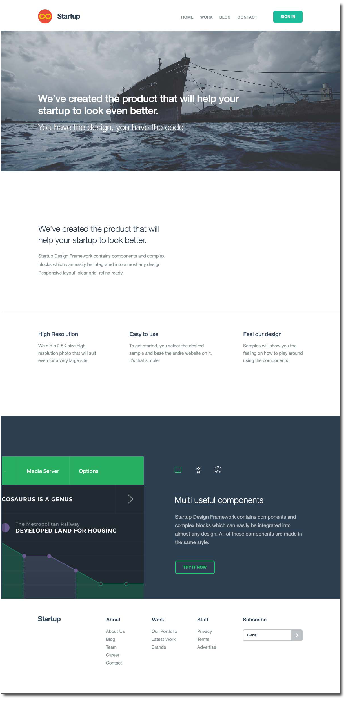

Bisk online front end developer challenge.
Description
The goal of this challenge is to develop as much of the layout of this single landing page as possible utilizing the bootstrap 4+ css framework. Complete as much of this challenge in the shortest amount of time you can from initial checkin to completed project. We would like to see your thinking process, your knowledge of SASS, LESS and/or CSS, and how you would go about developing a form and then use your knowledge of javascript to validate a lead form. You can develop the lead form and validation using any method you choose. The important thing to show is how you would go about putting in place some form of DOM manipulation to display form errors and prevent form submission without validated field information.
The project itself can be developed using your language of choice, HTML, PHP, Node, Ruby, and should be optimized for both Desktop and Mobile view ports.
Resources for the hero image and icons used in the layout are in the resources folder within this project.
Good Luck!!!
The challenge is the following:
- Create your own branch within this repo - firstname-lastname
- Check in your branch to the repo to begin the challenge
- Check in your code as you develop so that we can see your progress as you add functionality
- Develop the layout using clean CSS styling techniques utilizing as much out of the box bootstrap styling as possible.
- From the CTA button [ TRY IT NOW ] I would like a short form modal/or slider to appear asking for name, email and phone.
- Validate the lead form with required fields and highlight errors requiring the fields with proper validation rules.
- phone should be validated with digits between 10 and 15 numbers
- email should begin with a minimum of two alpha characters followed by the @ symbol followed by a minimum of two alpha characters followed by a period, and ending with a minimum of two alpha characters after the period.
- Check in the final landing page and then email the team letting us know you have completed this challenge - marketing-developers@bisk.com
